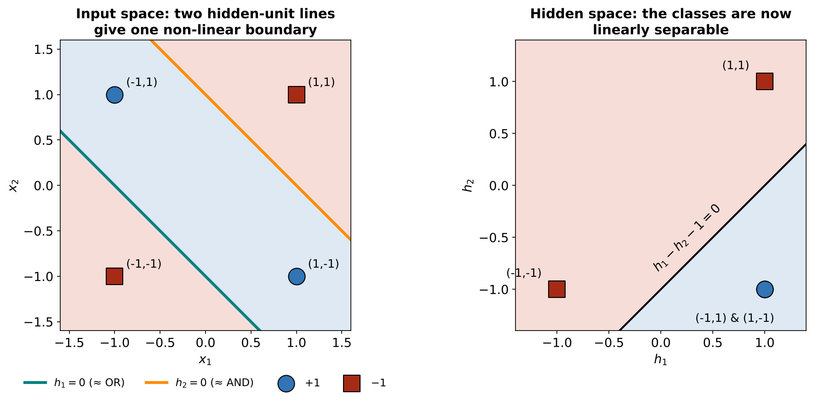
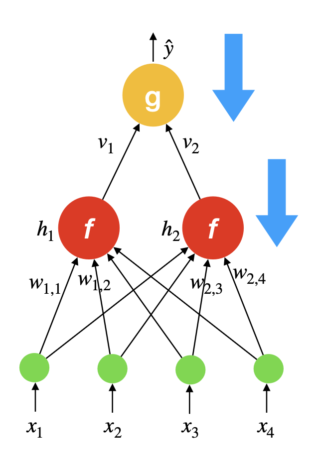
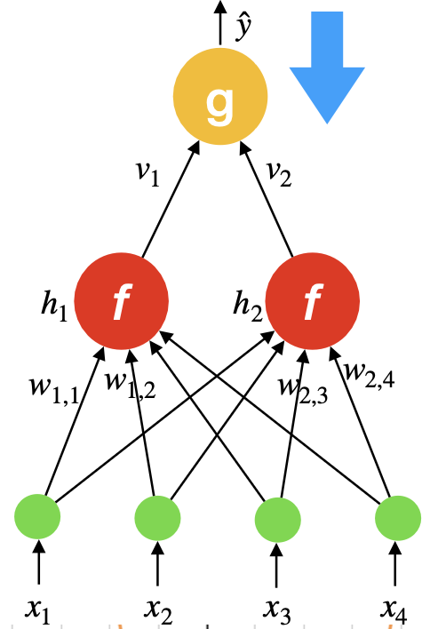
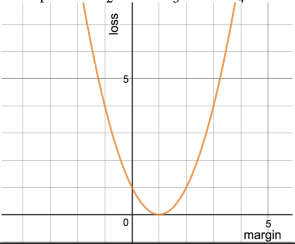
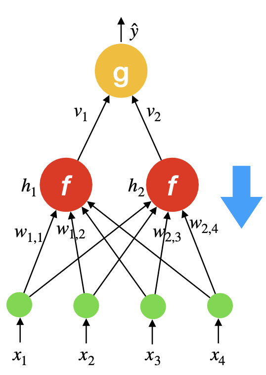
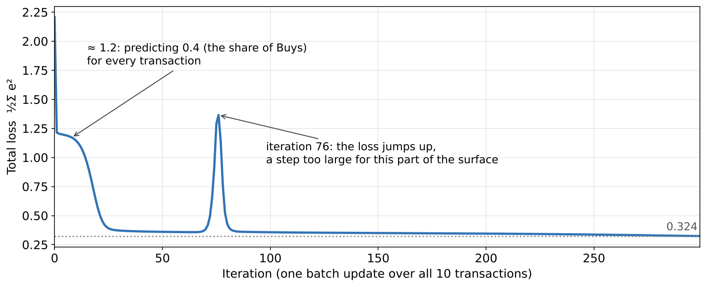
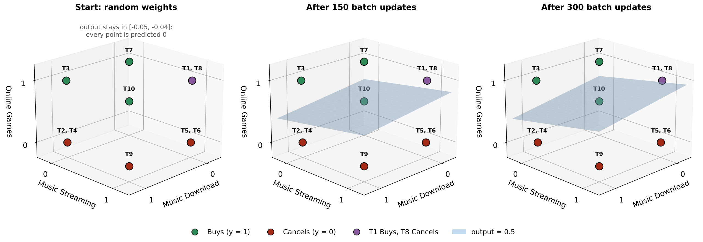
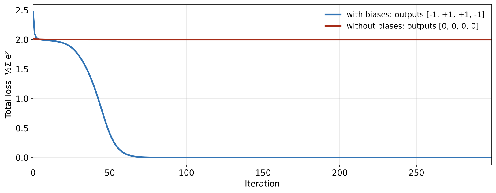

Output, “OR and not AND”: \[ \hat{y} = \class{p-out}{h_1 - h_2 - 1}, \quad \text{predict } \mathrm{sign}(\hat{y}) \]
\(x_1\)
\(x_2\)
\(h_1\)
\(h_2\)
\(\hat{y}\)
target
−1
−1
−1.00
−1.00
−1.00
−1
−1
+1
+1.00
−1.00
+1.00
+1
+1
−1
+1.00
−1.00
+1.00
+1
+1
+1
+1.00
+1.00
−1.00
−1
\(\tanh(5) \approx 0.9999\), so each hidden unit is almost a ±1 switch.
OR\(5x_1 + 5x_2 + 5\) is negative only when both inputs are \(-1\) (it is \(-5\)), so \(h_1 \approx +1\) unless both are off
AND\(5x_1 + 5x_2 - 5\) is positive only when both inputs are \(+1\) (it is \(+5\)), so \(h_2 \approx +1\) only when both are on
XOR\(h_1 - h_2 - 1 = +1\) when OR is on and AND is off (\(1 + 1 - 1\)); otherwise \(-1\)
Each hidden unit is one line, like a perceptron. The output unit combines the two lines.
How the Hidden Layer Solves XOR

The output unit only sees \((h_1, h_2)\). The inputs \((-1, 1)\) and \((1, -1)\) both map to the hidden point \((1, -1)\), and one straight line separates the classes.
Function Approximation with Neural Networks
Problem formulation
Set of possible instances \(X\)
Each instance \(\mathbf{x} \in X\) is a feature vector \(\mathbf{x} = [x_1, \ldots, x_D]\)
Unknown target function \(f: X \rightarrow Y\)
\(Y\) is binary valued \(\{-1, +1\}\)
Set of function hypotheses \(H = \{h \mid h: X \rightarrow Y\}\)
???
Input
Training examples \(\{(\mathbf{x}^{(1)}, y^{(1)}), \ldots, (\mathbf{x}^{(N)}, y^{(N)})\}\) of unknown target function \(f\)
Output
Hypothesis \(h \in H\) that best approximates function \(f\)
Two-Layer Networks are Universal Function Approximators
Theorem: Let \(F\) be a continuous function on a closed, bounded subset of \(D\)-dimensional space, and let \(\epsilon > 0\). Then there exists a two-layer neural network \(\hat{F}\) (sigmoid or tanh hidden units with biases, linear output) with a finite number of hidden units that approximates \(F\) arbitrarily well. Namely, for all \(\mathbf{x}\) in the domain of \(F\),
\[ |F(\mathbf{x}) - \hat{F}(\mathbf{x})| < \epsilon \]
… or put simply, with enough hidden units, two-layer networks can approximate any continuous function on a bounded region!
Design Question
How many hidden units? How many layers?
Inductive bias / Regularisation
More hidden units yield more complex functions
Overfitting
Fewer hidden units requires fewer examples to train
Training Neural Networks:
Backpropagation
Training Neural Networks

Backpropagation algorithm =
Gradient descent + Chain rule
Forward: compute \(\mathbf{h}\) and \(\hat{y}\), layer by layer
Backward: pass the error back down, layer by layer (the arrows), to get every weight’s gradient
What’s our training objective?
We will consider the following objective
\[ \min_{\mathbf{W}, \mathbf{v}} L(\mathbf{W}, \mathbf{v}) = \class{p-min}{\min_{\mathbf{W}, \mathbf{v}}} \class{p-sum}{\sum_n} \class{p-half}{\frac{1}{2}} \Big( \class{p-y}{y_n} - \class{p-yhat}{\sum_i v_i \cdot f(\mathbf{w}_i \cdot \mathbf{x}_n)} \Big)^2
\quad \text{where} \quad \hat{y}_n = \sum_i v_i \cdot f(\mathbf{w}_i \cdot \mathbf{x}_n) \]
i.e., our goal is to find parameters \(\mathbf{W}, \mathbf{v}\) that minimisesquared error
\(N\) examples with \(\mathbf{x}_n, y_n\)
Other objectives are possible (exponential, logistic, etc.)
Weight regularisation
\(\min_{\mathbf{W}, \mathbf{v}}\)find the hidden weights \(\mathbf{W}\) and output weights \(\mathbf{v}\) that make the rest as small as possible
\(\sum_i v_i f(\ldots)\)the network’s prediction \(\hat{y}_n\): the hidden outputs, weighted by \(\mathbf{v}\)
\(y_n - \hat{y}_n\)the error on example \(n\), squared as in Lecture 1
\(\frac{1}{2}\)a convenience: it cancels the 2 that appears when we take the slope of the square
\(\sum_n\)add over all \(N\) training examples
sothe same squared error as Lecture 1, with the network as the predictor
\(\mathbf{w}^{(0)} \leftarrow \langle 0, 0, \ldots, 0 \rangle,\ b^{(0)} \leftarrow 0\)// initialise the weights vector and bias
for \(k = 1 \ldots maxIter\) do
\(\mathbf{g}^{(k)} \leftarrow \nabla_{\mathbf{w}, b} L(\mathbf{w}, b; \mathbf{D})\big|_{\mathbf{w}^{(k-1)}, b^{(k-1)}}\)// gradient (slope of the loss) at the current point
\(\mathbf{w}^{(k)} \leftarrow \mathbf{w}^{(k-1)} - \eta^{(k)} \mathbf{g}^{(k)}\)// step down the gradient
\(b^{(k)} \leftarrow b^{(k-1)} - \eta^{(k)} \frac{\partial L}{\partial b}\)// update the bias the same way
end for
return \(\mathbf{w}^{(k)}, b^{(k)}\)
Greek letters \(\eta\) (eta): learning rate, the step size \(\nabla\) (nabla): gradient, the vector of partial derivatives \(\partial\): partial derivative
Notation \(\mathbf{w}^{(k)}\): value of \(\mathbf{w}\) at iteration \(k\) \(\langle 0, \ldots, 0 \rangle\): vector of zeros \(\leftarrow\): assignment \(\big|_{\mathbf{w}^{(k-1)}, b^{(k-1)}}\): evaluated at the previous values
Variables \(\mathbf{w}, b\): weights and bias we optimise \(L\): loss, the prediction error \(\mathbf{D}\): the training data \(\mathbf{g}\): gradient, the update direction \(k\): iteration number
Backprop Toolbox: Five Facts
The next slides use only these. Keep them in view while we derive the gradients.
1 · Chain ruleIf \(L\) depends on \(w\) only through \(u\): \(\quad \dfrac{\partial L}{\partial w} = \dfrac{\partial L}{\partial u} \cdot \dfrac{\partial u}{\partial w}\)Used at every step: follow the path from the weight to the loss
2 · Squared error\(L = \frac{1}{2} e^2,\ e = y - \hat{y} \ \Rightarrow\ \dfrac{\partial L}{\partial \hat{y}} = -e\)The start of both gradients
3 · Weighted sum\(g = \sum_i v_i h_i \ \Rightarrow\ \dfrac{\partial g}{\partial v_i} = h_i,\ \ \dfrac{\partial g}{\partial h_i} = v_i\)Output weights, and passing the error back to \(h_i\)
4 · Dot product\(\dfrac{\partial (\mathbf{w}_i \cdot \mathbf{x})}{\partial \mathbf{w}_i} = \mathbf{x}\)Hidden weights (as in linear regression)
5 · tanh\(\tanh'(a) = 1 - \tanh^2(a)\)Going through the hidden activation
Backprop Is the Chain Rule Along a Path
How does the loss change if we nudge a weight in \(\mathbf{w}_1\)? Follow the path from that weight to the loss, and multiply the rate at each step (fact 1).
\(-e\)how the loss reacts to the output (fact 2)
\(v_1\)how the output reacts to \(h_1\) (fact 3)
\(1 - h_1^2\)how \(h_1\) reacts to its weighted sum \(a_1\): the slope of tanh (fact 5)
Two-layer NN: Gradient of output layer weights \(\mathbf{v}\) (1/3)
Where we’re heading\(\nabla_{\mathbf{v}} = -e_n \cdot \mathbf{h}_n\)line 13 of the backprop algorithm: \(\mathbf{g} \leftarrow \mathbf{g} - e\,\mathbf{h}\)
The loss function:
\[ L(\mathbf{W}, \mathbf{v}) = \sum_n \frac{1}{2} \Big( y_n - \sum_i v_i \cdot f(\mathbf{w}_i \cdot \mathbf{x}_n) \Big)^2 \]
Breaking this down, for each training example \(n\):
the prediction: \(\hat{y}_n = \sum_i v_i \cdot f(\mathbf{w}_i \cdot \mathbf{x}_n)\)
the error: \(e_n = y_n - \hat{y}_n\)
the loss: \(L = \frac{1}{2} e_n^2\)
We want: how does the loss change when we change the output weight \(v_i\)? That is \(\dfrac{\partial L}{\partial v_i}\).


Two-layer NN: Gradient of output layer weights \(\mathbf{v}\) (2/3)
We use \(g\) for the network output (the prediction). By the chain rule (fact 1):
\[ \frac{\partial L}{\partial v_i} = \color{#3274B5}{\frac{\partial L}{\partial g}} \cdot \color{#A62B17}{\frac{\partial g}{\partial v_i}} \]
Part 1: how does the loss change with the prediction?
\(\mathbf{h}_n\)the hidden outputs: a unit with a large output (near \(+1\) or \(-1\)) gets its outgoing weight changed most; a unit at 0 gets no change
The update rule*:
For a single example (online): \(\ \nabla_{\mathbf{v}} = -e_n \cdot \mathbf{h}_n\)
For all examples (batch): \(\ \nabla_{\mathbf{v}} = -\sum_n e_n \cdot \mathbf{h}_n\)
* Assuming a linear (identity) activation at the output unit, \(g = \mathit{identity}(\sum_i v_i \cdot h_{i,n})\)
Compare with linear regression in Lecture 1: \(\mathbf{w} \leftarrow \mathbf{w} + \eta \cdot \delta \cdot \mathbf{x}_n\). The \(\mathbf{v}\) update is the same rule with the hidden features \(\mathbf{h}_n\) in place of the inputs \(\mathbf{x}_n\): for fixed hidden weights, the output layer is linear regression on \(\mathbf{h}_n\).
Quick Check: Output Weights
One minute with your neighbour, then we compare answers.
1The network predicts example \(n\) perfectly. How much does \(\mathbf{v}\) change on this example?
Not at all. \(e_n = 0\), so \(\nabla_{\mathbf{v}} = -e_n \mathbf{h}_n = \mathbf{0}\). Gradient descent only learns from errors.
2On example \(n\), hidden unit \(i\) outputs \(h_{i,n} = 0\). How much does its outgoing weight \(v_i\) change on this example?
Not at all. Its gradient is \(-e_n h_{i,n} = 0\). \(v_i\) only learns from examples where unit \(i\) is active.
Two-layer NN: Gradient of hidden unit weights \(\mathbf{w}_i\) (1/4)
Where we’re heading\(\nabla_{\mathbf{w}_i} = -e\, v_i \big(1 - \tanh^2(a_i)\big)\, \mathbf{x}\)line 15 of the backprop algorithm, with \(a_i = \mathbf{w}_i \cdot \mathbf{x}\)
The loss function (one example):
\[ L(\mathbf{W}, \mathbf{v}) = \frac{1}{2} \Big( y - \sum_i v_i \cdot f(\mathbf{w}_i \cdot \mathbf{x}) \Big)^2 = \frac{1}{2} e^2 \]
where the error is \(e = y - \sum_i v_i \cdot f(\mathbf{w}_i \cdot \mathbf{x})\).
In simple words: \(\mathbf{w}_i\) only reaches the loss through the activation \(h_i = f_i = f(\mathbf{w}_i \cdot \mathbf{x})\) of hidden unit \(i\), so we go through it.

Two-layer NN: Gradient of hidden unit weights \(\mathbf{w}_i\) (2/4)
For tanh, the gradient \(f'\) is (fact 5): \(\quad f'(\mathbf{w}_i \cdot \mathbf{x}) = 1 - \tanh^2(\mathbf{w}_i \cdot \mathbf{x})\)
With \(a_i = \mathbf{w}_i \cdot \mathbf{x}\) (line 8 of the algorithm) and \(h_i = \tanh(a_i)\) (line 9):
\[ \nabla_{\mathbf{w}_i} = \class{p-e}{\underbrace{-e}_{\text{error}}} \cdot \class{p-v}{\underbrace{v_i}_{\text{how much the output uses } h_i}} \cdot \class{p-s}{\underbrace{\big(1 - \tanh^2(a_i)\big)}_{\text{slope of } h_i\text{, also } 1 - h_i^2}} \cdot \class{p-x}{\underbrace{\mathbf{x}}_{\text{input}}} \]
\(-e\)the output’s error: no error, no update
\(v_i\)how much the output listens to unit \(i\): if \(v_i \approx 0\), unit \(i\) gets almost no blame
\(1 - h_i^2\)how responsive unit \(i\) is: near 1 when \(a_i\) is near 0, near 0 when tanh is saturated (\(h_i \approx \pm 1\))
\(\mathbf{x}\)the inputs: a weight whose input is 0 does not change
all fourerror × outgoing weight × slope × input: the same path as on the chain-rule slide
Two-layer NN: Gradient of hidden unit weights \(\mathbf{w}_i\)
Intuition
Small \(e\) \(\rightarrow\) small gradient
\(v_i\) small \(\rightarrow\) output not sensitive to activation of \(h_i\) \(\rightarrow\) small gradient
\(v_i\) flips sign \(\rightarrow\) gradient should also flip sign
Quick Check: Hidden Weights
One minute with your neighbour, then we compare answers.
1A hidden unit has \(a_i = 5\), so \(h_i = \tanh(5) \approx 1\). How much do its weights \(\mathbf{w}_i\) move?
Almost not at all. \(1 - \tanh^2(5) \approx 0.0002\). A saturated unit learns very slowly, the same problem as the sigmoid with the squared loss in Lecture 1.
2We start with every weight in \(\mathbf{W}\) and \(\mathbf{v}\) equal to 0. What do the gradients look like?
The hidden layer never moves. \(\mathbf{h} = \tanh(\mathbf{0}) = \mathbf{0}\), so \(v_1, \ldots, v_K\) get \(-e\,h_i = 0\); and \(v_i = 0\), so every \(\nabla_{\mathbf{w}_i} = \mathbf{0}\). Only the output bias learns, so the network can only predict a constant (the mean). That is why we start from small random values.
Backprop for 2-layer Network
Algorithm 25 TWO LAYER NETWORK TRAIN(\(\mathbf{D}, \eta, K, MaxIter\))
\(\mathbf{W} \leftarrow D \times K\) matrix of small random values// initialise input layer weights
\(\mathbf{v} \leftarrow K\)-vector of small random values// initialise output layer weights
for \(iter = 1 \ldots MaxIter\) do
\(\mathbf{G} \leftarrow D \times K\) matrix of zeros// initialise input layer gradient
\(\mathbf{g} \leftarrow K\)-vector of zeros// initialise output layer gradient
for all \((\mathbf{x}, y) \in \mathbf{D}\) do
for \(i = 1\) to \(K\) do
\(a_i \leftarrow \mathbf{w}_i \cdot \mathbf{x}\)
\(h_i \leftarrow \tanh(a_i)\)// compute activation of hidden unit \(i\)
end for
\(\hat{y} \leftarrow \mathbf{v} \cdot \mathbf{h}\)// compute output unit
\(e \leftarrow y - \hat{y}\)// compute error
\(\mathbf{g} \leftarrow \mathbf{g} - e\,\mathbf{h}\)// update gradient for output layer
Biases: append a constant 1 to \(\mathbf{x}\) and to \(\mathbf{h}\), so each \(\mathbf{w}_i\) and \(\mathbf{v}\) gets one extra weight (the same trick as \(x_0 = 1\) in linear regression).
\(v_1\) is negative and \(v_2\) positive, so the two hidden units get gradients of opposite sign (“\(v_i\) flips sign”). Music DL is 0 for T1, so its weights get nothing from T1.
This is batch training: these are T1’s contributions. The weights change only after all 10 transactions (lines 18–19). Computed at full precision and rounded to 4 decimals.
After the First Batch Update
All 10 transactions summed (lines 6–17), then \(\mathbf{W} \leftarrow \mathbf{W} - \eta\,\mathbf{G}\) and \(\mathbf{v} \leftarrow \mathbf{v} - \eta\,\mathbf{g}\) with \(\eta = 0.1\):
The output bias jumps from \(-0.046\) to \(0.402\). The hidden units’ contributions \(v_i h_i\) are still tiny (about 0.01) next to the bias input 1, so the quickest way to cut the loss is to predict about 0.4, the share of Buys (4 of 10), for every customer. The total loss falls from 2.21 to 1.22.
Computed at full precision and rounded to 4 decimals.
Training for 300 Iterations

Total loss after each batch update. The notebook prints every 10th iteration, so only a small bump shows there (0.38 at 70, 0.43 at 80); the peak of 1.36 at iteration 76 falls between printed lines. Try \(\eta = 0.05\) (no jump, but slower) and \(\eta = 0.2\) (diverges) in the notebook.
Final Predictions
Transaction
True
Predicted \(\hat{y}\)
\(\hat{y} > 0.5\)
Correct?
T1
1
0.6419
1
✓
T2
0
0.1174
0
✓
T3
1
1.0213
1
✓
T4
0
0.1174
0
✓
T5
0
−0.1081
0
✓
T6
0
−0.1081
0
✓
T7
1
0.8501
1
✓
T8
0
0.6419
1
✗
T9
0
−0.0166
0
✓
T10
1
0.8201
1
✓
Training accuracy: 90% (9 of 10)
T1 and T8 have the same three features but different outputs, so they get the same prediction (0.6419). No model can get both right: 90% is the best possible here.
Add the fourth feature, Board Games, and the data becomes separable (end of the Perceptron notebook).
The Learned Decision Boundary

The surface where the network output is 0.5. With the random starting weights the output stays between −0.05 and −0.04, so there is no surface yet. With two hidden units and fairly small weights, the learned surface is only gently curved.
Back to XOR: Why We Need Biases

Same network and algorithm, trained on XOR (±1 inputs)
Without biases, tanh is odd, so the whole network is: \(f(-\mathbf{x}) = -f(\mathbf{x})\). XOR needs \(f(1, 1) = f(-1, -1) = -1\), but the two must have opposite signs. Gradient descent settles at \(f = 0\) on all four points (loss 2).
With biases, 9 of 10 random starts solve XOR. The other one gets stuck: training is sensitive to initialisation.
Issues with training
Sensitive to initialization
Objective is non-convex, many local optima
In practice: start with random values rather than zeros
Many other hyperparameters
Number of hidden units
Number of hidden layers
Gradient descent learning rate
Stopping criterion
Online vs Batch Update
Online (aka Stochastic Gradient Descent)
Update parameters after forward-propagation on every example
Batch and Mini-batch
Update parameters after forward-propagation on all examples (batch, as in Algorithm 25) or on a small random subset (mini-batch SGD)
Stochastic Gradient Descent Variants
Adam, AdaGrad
Why?
More robust
against noise (irrelevant features)
can be seen as a form of regularisation
More efficient (10M examples and full batch? Nah…)
Summary
A perceptron draws one line, so it cannot learn XOR. A hidden layer of tanh units moves the data to a space where one line works.
A two-layer network \(\hat{y} = \sum_i v_i \tanh(\mathbf{w}_i \cdot \mathbf{x})\) (with biases) can approximate any continuous function on a closed, bounded region, given enough hidden units; more units mean more complex functions and a risk of overfitting.
Backpropagation = gradient descent + chain rule
output weights: \(\nabla_{\mathbf{v}} = -e\,\mathbf{h}\), the Lecture 1 update with \(\mathbf{h}\) in place of \(\mathbf{x}\)
hidden weights: \(\nabla_{\mathbf{w}_i} = -e\, v_i (1 - h_i^2)\, \mathbf{x}\), the error sent back through \(v_i\) and the tanh slope
In practice: the loss is non-convex, so results depend on the starting point. Start from small random (not zero) weights so the hidden units differ, keep the biases, and tune \(\eta\), \(K\) and batch vs online.
Revise and Experiment
Interactive demos
XOR Hidden Space: move the hidden units, then turn the biases off